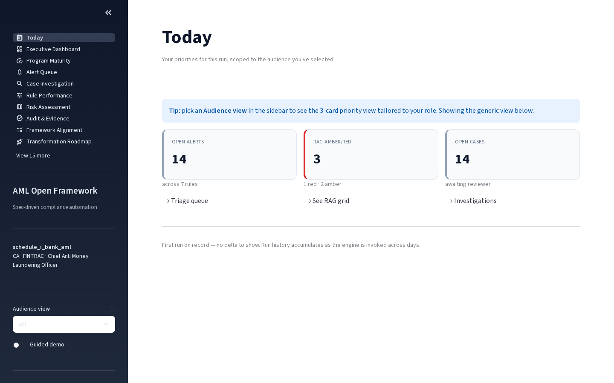

Three priority cards scoped to the active audience. Every card a routable signal to the destination page where the user can act.

Mono cyan SHA-256 hashes, ✓ chain verified, "Re-verify" button. The page auditors look at first, executed at 120%.